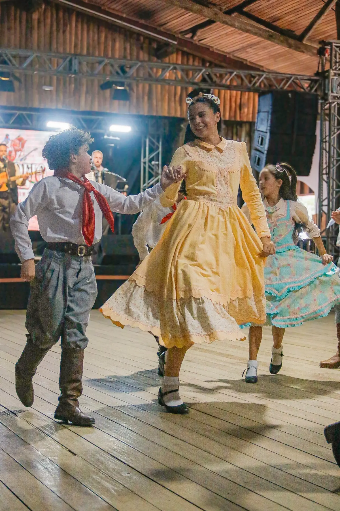
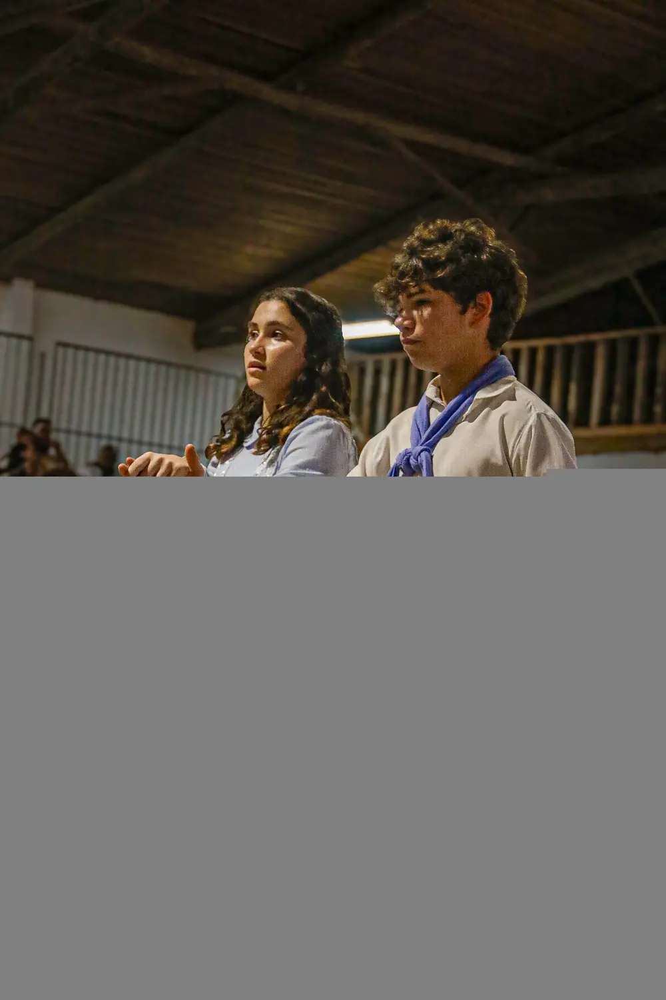
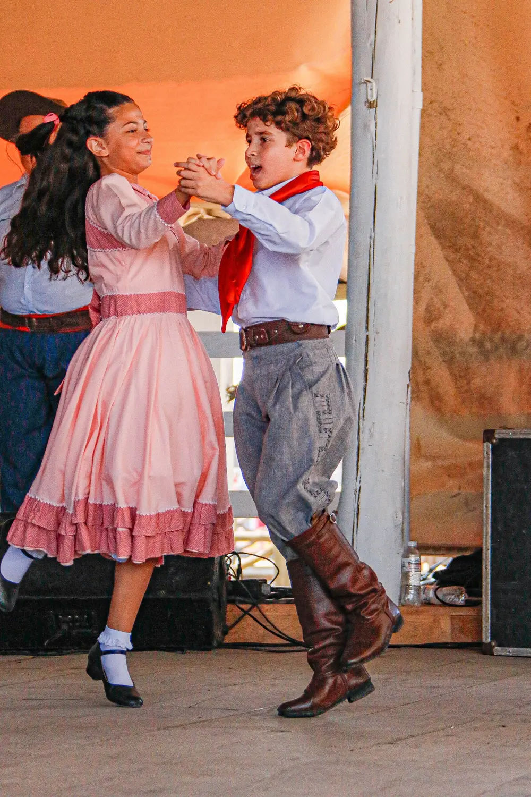
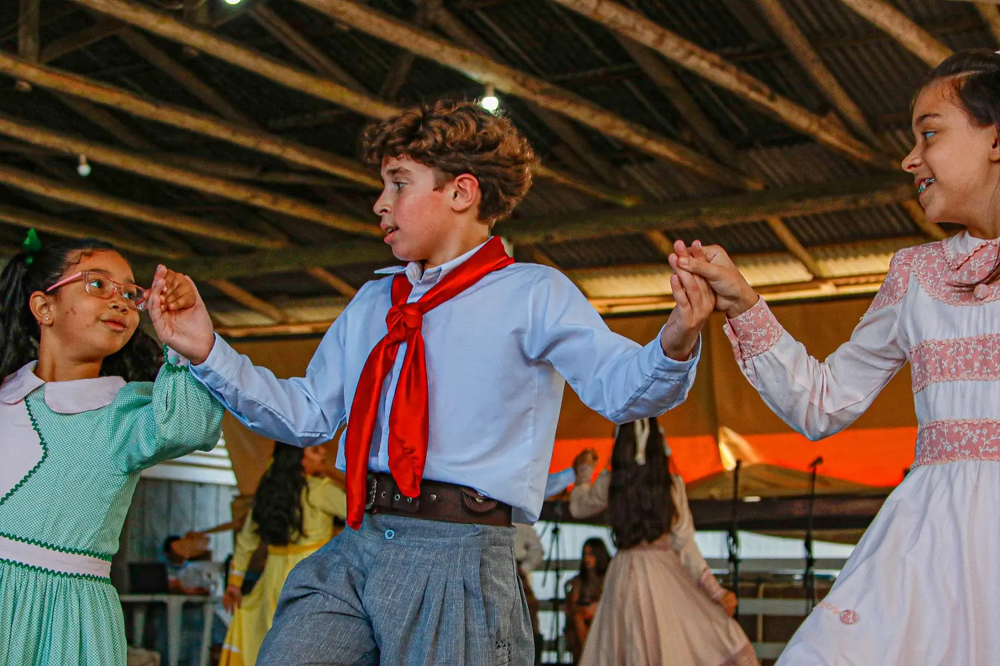
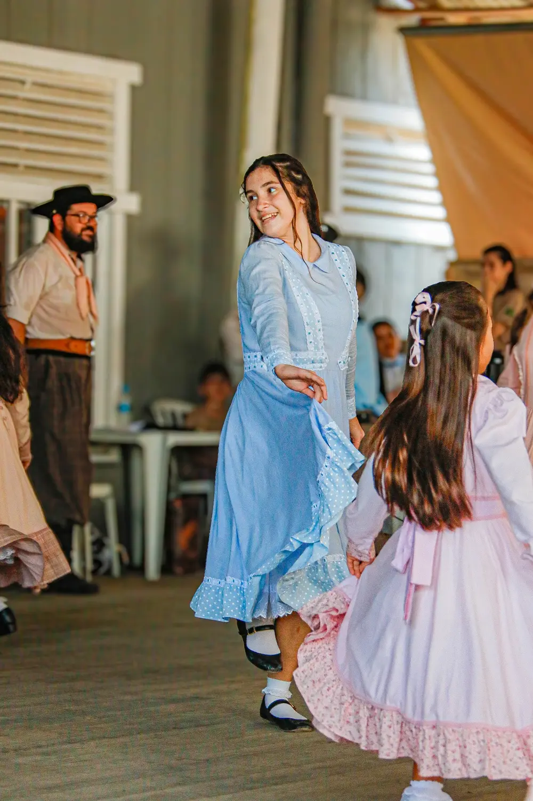
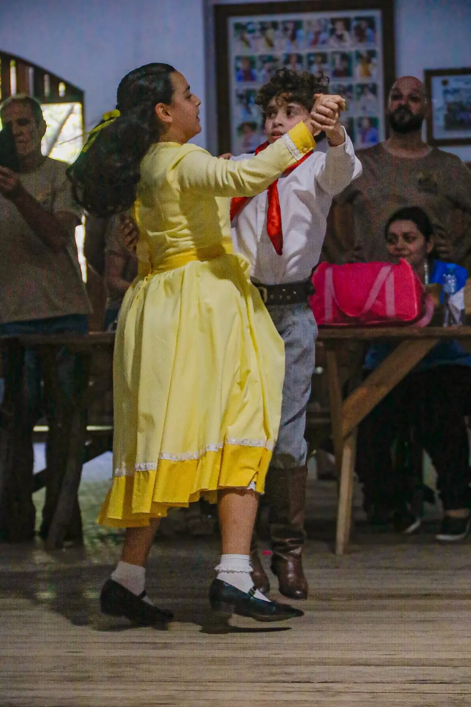
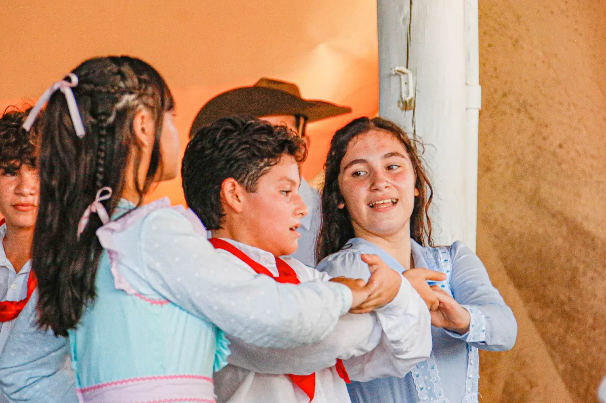

Tradição
Preservamos histórias, costumes, música e dança com respeito às nossas raízes.
Entre passos, sorrisos e novas amizades, nossas crianças e jovens mantêm viva a cultura gaúcha e levam o nome de Araranguá por onde passam.


A Invernada Artística Gaúchos por Tradição representa o CTG Crioulos do Caverá, de Araranguá/SC, celebrando a dança, a amizade e o sentimento de pertencimento.
Aqui, cada prenda e peão encontra espaço para aprender, crescer e descobrir que tradição também se constrói em grupo.
Um espaço de aprendizado e convivência, onde a cultura ganha vida e cada jovem encontra seu lugar na roda.
Preservamos histórias, costumes, música e dança com respeito às nossas raízes.
Criamos vínculos verdadeiros entre crianças, jovens, famílias e comunidade.
Representamos com orgulho o CTG Crioulos do Caverá e a cidade de Araranguá.
A dança tradicionalista desenvolve presença, coordenação e confiança — sempre com alegria, parceria e respeito.
“Quando a música começa, a tradição encontra uma nova geração.”
Um pouco da energia, da dedicação e da alegria que compartilhamos dentro e fora do tablado.





Movimento · alegria · cultura · memória
Quer conhecer a invernada, acompanhar nossas atividades ou saber como participar?
Conheça o grupo